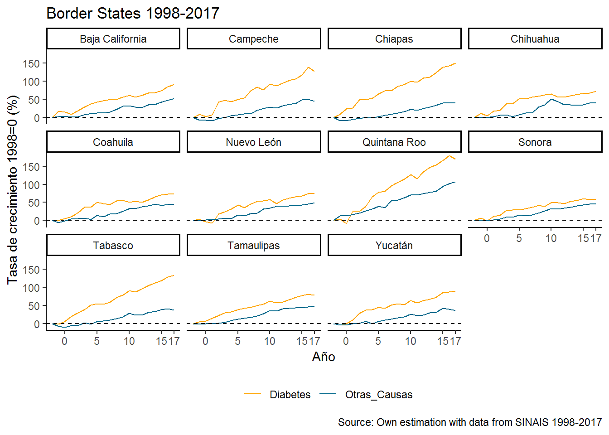

During the last fifteen years, T2D mortality showed an explosive pattern at the border states. This growth rate pattern departs from the trend followed by all other death causes.
In particular, a rapid growth trajectory at the southern border is evident, with a widening gap by the end of the study period. This trend reaches a 169% increase in Quintana Roo by 2019 relative to the base year 1998, with an annual 8.45% average growth rate.
Nevertheless, the biggest gap between the overall mortality levels and diabetes mortality is observed in Chiapas, with a gap equivalent to 109.8% between diabetes mortality, which register a 149.8% accumulated growth during the period 1998-2017 compared to a moderate 39.9% mortality growth for all other causes.
Despite the fact that, among the northern border states there is also an accelerated growth trend, we find smaller gaps in this region.
In fact, the smallest gap between Diabetes mortality trends and the overall path is found in Sonora and it’s equivalent to 12.8%, which is just a reflection of the fact that Diabetes is defining “pulling” the observed mortality trend.
In these states Diabetes is so prevalent that it’s behaviour is shaping the over all mortality trayectory.
This contrast relative to the southern border suggest significant and fast regional changes in the Mexican population health, as well as important implications for the health care system as a whole, it is important to remember that Diabetes is considered a high financial impact disease from the perspective of the Health care system.
The following graphs shows a closer look a the trend in each region.